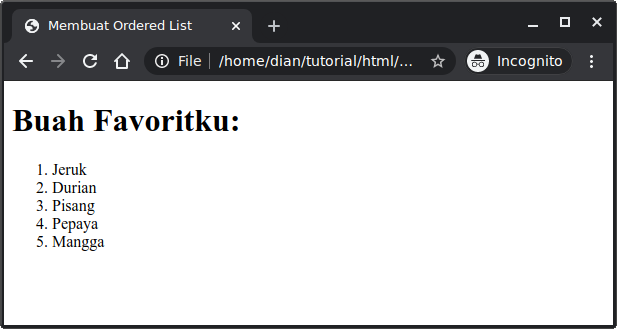
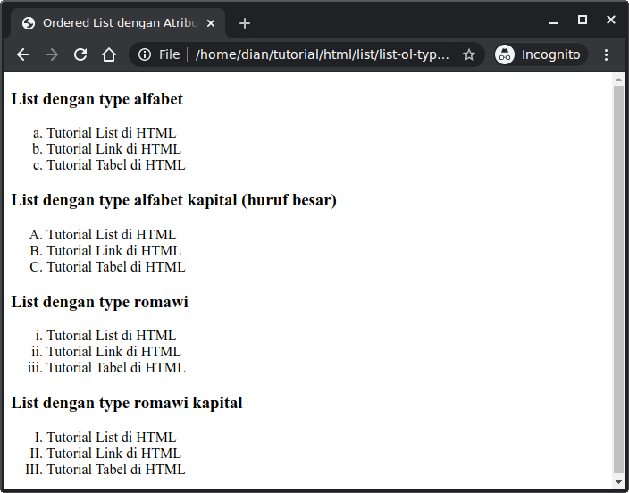
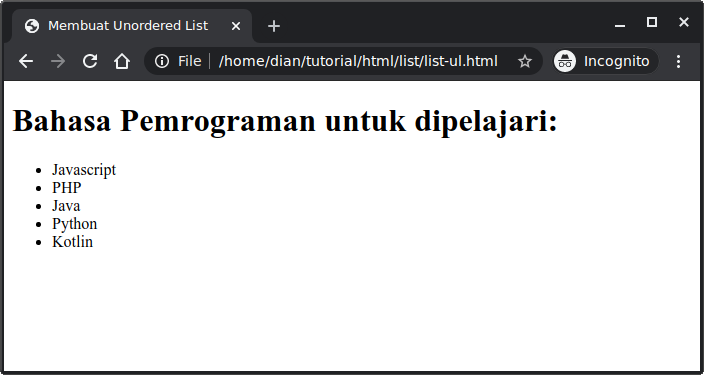
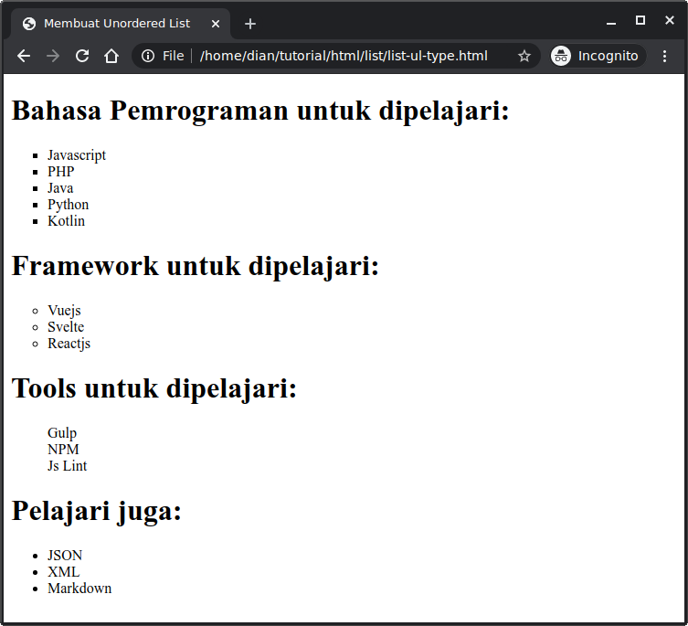
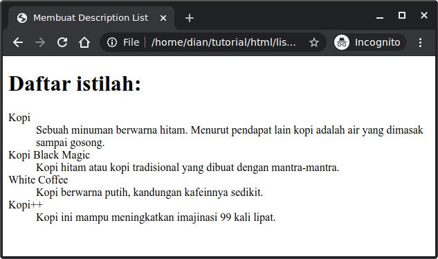

1. Pengenalan List di HTML
Pada saat kita ingin menampilkan serangkaian item — misalnya daftar belanja, menu, atau tugas — di dalam web, kita perlu menggunakan struktur yang memadai agar tampilannya rapi dan maknanya jelas. Meskipun kita bisa saja menulis satu-per-satu dengan paragraf atau teks biasa, HTML menyediakan elemen yang memang khusus untuk membuat daftar (list). Dengan menggunakan list yang benar, kita tidak hanya mendapatkan tampilan yang rapi, tapi juga struktur semantik yang jelas—yang membantu pembaca maupun mesin pencari memahami konten dengan lebih baik.
2. Jenis-Jenis List di HTML
Menurut PetaniKode, ada tiga jenis utama list yang bisa dibuat di HTML.
- Ordered List (list terurut) — ketika urutan item penting, misalnya langkah-langkah.
- Unordered List (list tak terurut) — ketika hanya ingin menampilkan sejumlah item yang tidak memiliki urutan spesifik, misalnya daftar bahan.
- Description List (list deskripsi) — ketika kita ingin menyajikan daftar istilah dan definisinya.
Ordered List
Ordered list dibuat dengan tag <ol>. Lalu di dalamnya diisi dengan item-item yang akan dimasukkan ke dalam list. Item dibuat dengan tag <li> (list item).
Contoh:
<!DOCTYPE html>
<html lang="en">
<head>
<title>Membuat Ordered List</title>
</head>
<body>
<h1>Buah Favoritku:</h1>
<ol>
<li>Jeruk</li>
<li>Durian</li>
<li>Pisang</li>
<li>Pepaya</li>
<li>Mangga</li>
</ol>
</body>
</html>
Hasilnya:

List di atas diurutkan berdasarkan angka dari 1, 2, 3, sampai 5.
Kita juga bisa mengubah tipe penomoran dengan atribut type, pada <ol>:
auntuk alfabeta,b,c, dan seterusnya;Auntuk alfabetA,B,C, dan seterusnya;iuntuk angka romawii,ii,iii, dan seterusnya;Iuntuk angka romawiII,II,III, dan seterusnya;
Contoh:
<!DOCTYPE html>
<html lang="en">
<head>
<title>Ordered List dengan Atribut Type</title>
</head>
<body>
<h3>List dengan type alfabet</h3>
<ol type="a">
<li>Tutorial List di HTML</li>
<li>Tutorial Link di HTML</li>
<li>Tutorial Tabel di HTML</li>
</ol>
<h3>List dengan type alfabet kapital (huruf besar)</h3>
<ol type="A">
<li>Tutorial List di HTML</li>
<li>Tutorial Link di HTML</li>
<li>Tutorial Tabel di HTML</li>
</ol>
<h3>List dengan type romawi</h3>
<ol type="i">
<li>Tutorial List di HTML</li>
<li>Tutorial Link di HTML</li>
<li>Tutorial Tabel di HTML</li>
</ol>
<h3>List dengan type romawi kapital</h3>
<ol type="I">
<li>Tutorial List di HTML</li>
<li>Tutorial Link di HTML</li>
<li>Tutorial Tabel di HTML</li>
</ol>
</body>
</html>
Hasilnya:

Unordered List
Unordered list adalah list yang tak terurut yang menggunakan simbol-simbol pada item-nya. Unordered list dibuat dengan tag <ul> dan untuk item-nya dibuat juga dengan tag <li>.
Contoh:
<ul>
<li>Javascript</li>
<li>PHP</li>
<li>Java</li>
<li>Python</li>
<li>Kotlin</li>
<ul>
Hasilnya:

Secara default simbol yang digunakan oleh unordered list adalah lingkaran kecil (disc). Kita juga bisa menggantinya dengan atribut type.
Berikut ini nilai yang bisa diberikan untuk atribut type:
squareuntuk simbol persegi;disc(default) untuk simbol lingkaran disc;nonetidak memakai simbol;circleuntuk simbol lingkaran;
Contoh:
<!DOCTYPE html>
<html lang="en">
<head>
<title>Membuat Unordered List</title>
</head>
<body>
<h1>Bahasa Pemrograman untuk dipelajari:</h1>
<ul type="square">
<li>Javascript</li>
<li>PHP</li>
<li>Java</li>
<li>Python</li>
<li>Kotlin</li>
</ul>
<h1>Framework untuk dipelajari:</h1>
<ul type="circle">
<li>Vuejs</li>
<li>Svelte</li>
<li>Reactjs</li>
</ul>
<h1>Tools untuk dipelajari:</h1>
<ul type="none">
<li>Gulp</li>
<li>NPM</li>
<li>Js Lint</li>
</ul>
<h1>Pelajari juga:</h1>
<ul type="disc">
<li>JSON</li>
<li>XML</li>
<li>Markdown</li>
</ul>
</body>
</html>
Hasilnya:

Description List
Description List adalah list yang berisi deskripsi atau penjelasan dari sesuatu.
Ada tiga tag yang digunakan untuk membuat description list:
<dl>(description list) tag untuk memulai description list;<dt>(description term) tag untuk membuat kata yang akan dideskripsikan;<dd>(description description) tag untuk membuat penjelasan dari kata.
Contoh:
<h1>Daftar istilah:</h1>
<dl>
<dt>Kopi</dt>
<dd>Sebuah minuman berwarna hitam. Menurut pendapat lain kopi adalah air yang dimasak sampai gosong.</dd>
<dt>Kopi Black Magic</dt>
<dd>Kopi hitam atau kopi tradisional yang dibuat dengan mantra-mantra.</dd>
<dt>White Coffee</dt>
<dd>Kopi berwarna putih, kandungan kafeinnya sedikit.</dd>
<dt>Kopi++</dt>
<dd>Kopi ini mampu meningkatkan imajinasi 99 kali lipat.</dd>
<dl>
Hasilnya:
